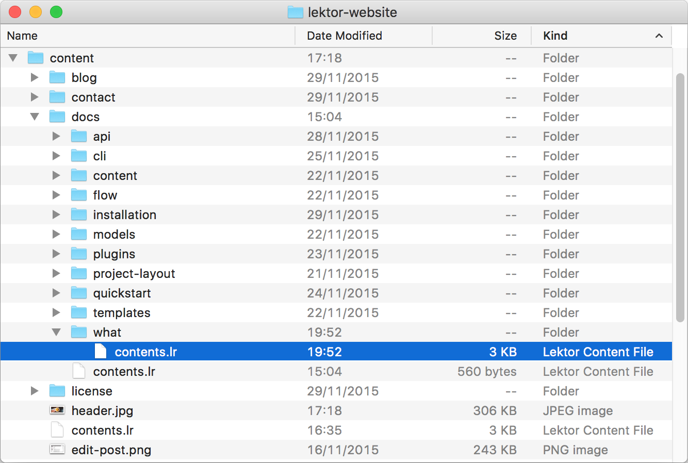
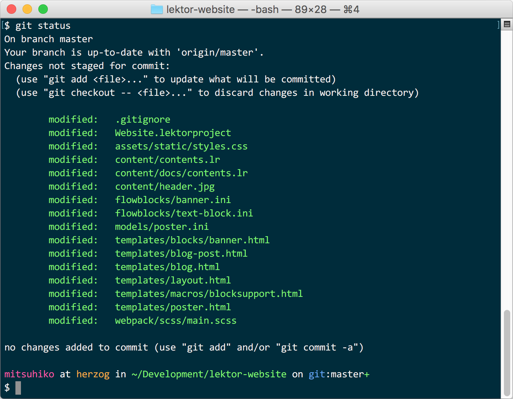

What is Lektor
When it comes to creating websites, there is a ludicrous number of tools available. They range from full-blown content management solutions like Drupal to desktop solutions like Google Web Designer to Cloud Hosted Website solutions like WIX to more programmer focused approaches like Jekyll which generate websites out of templates and markdown files.
Lektor is different from any of these.
Lektor is Static
Lektor learned from the huge range of static file generators like Jekyll, Pelican, Hugo, Middleman and many more about the value of generating a completely static website. This means that unlike WordPress or similar solutions it does not run on a server, but your local computer (or a build server), and generates static HTML that can be uploaded to any web server or content distribution platform like S3 with CloudFront.
Why go static? Because the vast, vast majority of websites will be read many more times than they will be updated. This is crucial because dynamic content does not come for free. It needs server resources and because program code is running there it needs to be kept up to date for to ensure there are no security problems that are left unpatched. Also when a website gets a sudden spike of traffic a static website will stay up for longer on the same server than a dynamic one that needs to execute code.
Sure, there are some things you cannot do on a static website, but those are not things you would use Lektor for. For small dynamic sections, JavaScript paired up with other services is a good solution.

Lektor is a CMS
Lektor takes from content management systems like WordPress and provides a flexible browser-based admin interface from which you can edit your website's contents. Unlike traditional CMS solutions, however, it runs entirely on your own computer.
This means you can give a Lektor website to people that have no understanding of programming and they can still modify the content and update the website.

Lektor is a Framework
Lastly, Lektor learns from experience in writing web frameworks. Lektor is much more than a website generator because it is based on a very flexible internal flat file database which can be used to model any website content. Unlike static blog generators which are based on some markdown content and “front matter” metadata Lektor's content is 100% configurable.
If you have ever used a web framework like Django or Ruby on Rails you might feel right at home in how you can model and query your data.

Collaborate and Synchronize
Lektor acknowledges that there are web developers and content editors and that their interests and preferences are very different. This is reflected heavily in the design of Lektor and if you make your first Lektor project you can see why. A web developer would go in and setup the theme and structure of a Lektor project and content creators can then fill in the content of the site.
The collaboration can be based on version control systems like git or just basic solutions like Dropbox. It's intentionally built so that collaboration can work via the most basic systems like Dropbox or just network shares.
When you go live, you can synchronize up your changes into a remote server just as easily.
